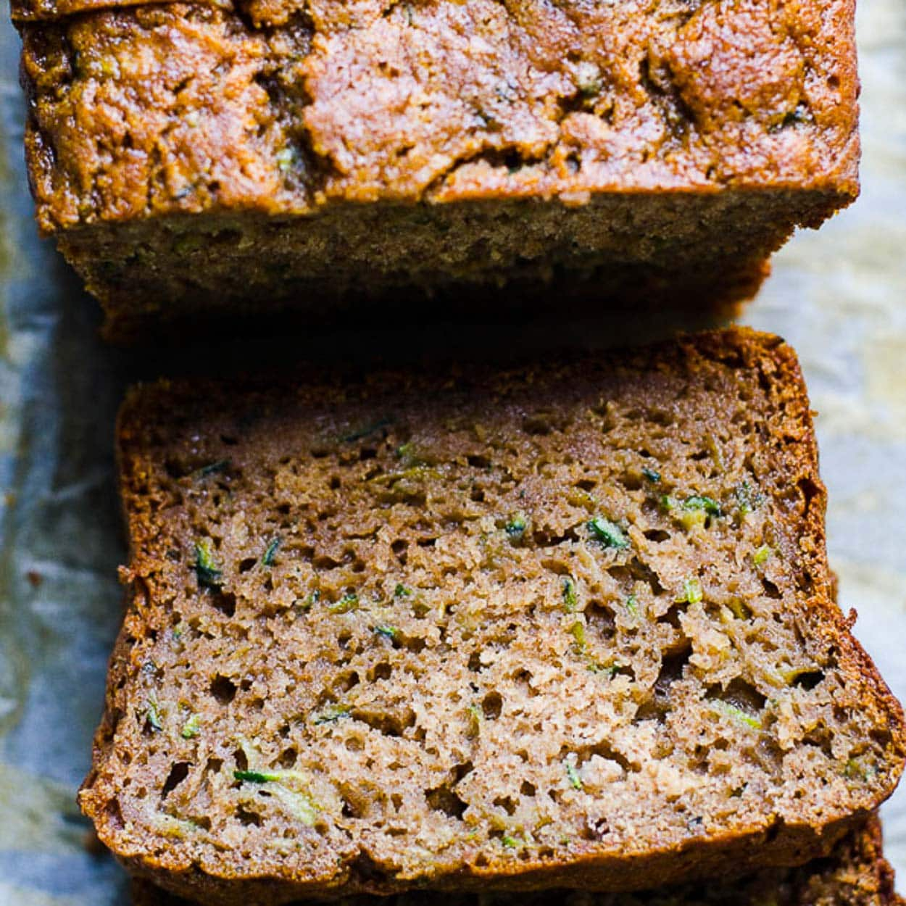

Healthy Zucchini Bread

Description
This fluffy zucchini bread recipe is made healthier with whole grains, honey (or maple syrup) and coconut oil instead of butter. It is easily made vegan and/or gluten free (see notes). Recipe yields 1 loaf.
Ingridients
- Optional: ¾ cup roughly chopped raw walnuts or pecans
- ⅓ cup melted coconut oil or extra-virgin olive oil*
- ½ cup honey or maple syrup
- 2 eggs
- ½ cup milk of choice or water
- 1 teaspoon baking soda
- 1 teaspoon ground cinnamon + more to swirl on top
- 2 teaspoons vanilla extract
- ½ teaspoon fine-grain sea salt
- ¼ teaspoon ground nutmeg
- 1 ½ cups grated zucchini (you’ll need 1 small-to-medium zucchini, about 7 ounces—gently squeeze out excess moisture over the sink before stirring it into the batter)
- 1 ¾ cups white whole wheat flour or regular whole wheat flour
Steps
- Preheat oven to 325°F. Grease a 9” x 5” loaf pan to prevent the bread from sticking. If you’ll be toasting the nuts, line a small, rimmed baking sheet with parchment paper for easy cleanup.
- Toast the nuts: Once the oven has finished preheating, pour the chopped nuts onto your prepared baking sheet. Bake until the nuts are fragrant and toasted, about 5 minutes, stirring halfway.
- In a large mixing bowl, combine the coconut oil and honey. Beat them with a whisk until they are combined. Add the eggs and beat well. (If your coconut oil solidifies on contact with cold ingredients, simply let the bowl rest in a warm place for a few minutes, like on top of your stove, or warm it for about 20 seconds in the microwave.)
- Add the milk, baking soda, cinnamon, vanilla, salt and nutmeg, and whisk to blend. Switch to a big spoon and stir in the zucchini (be sure to squeeze excess moisture out of the zucchini first). Add the flour and stir just until combined. Some lumps are ok! Gently fold in the toasted nuts now, if using.
- Pour the batter into your greased loaf pan and sprinkle lightly with additional cinnamon. If you’d like a pretty swirled effect, run the tip of a knife across the batter in a zig-zag pattern.
- Bake for 55 to 60 minutes, or until a toothpick inserted into the center comes out clean and the center of the loaf springs back to the touch. Let the bread cool in the pan on a wire rack. Use a serrated knife to cut individual slices.
- This bread is moist, so it will keep for just 2 to 3 days at room temperature. Store it in the refrigerator for 5 to 7 days, or in the freezer for up to 3 months or so. I like to slice the bread before freezing and defrost individual slices, either by lightly toasting them or defrosting them in the microwave.